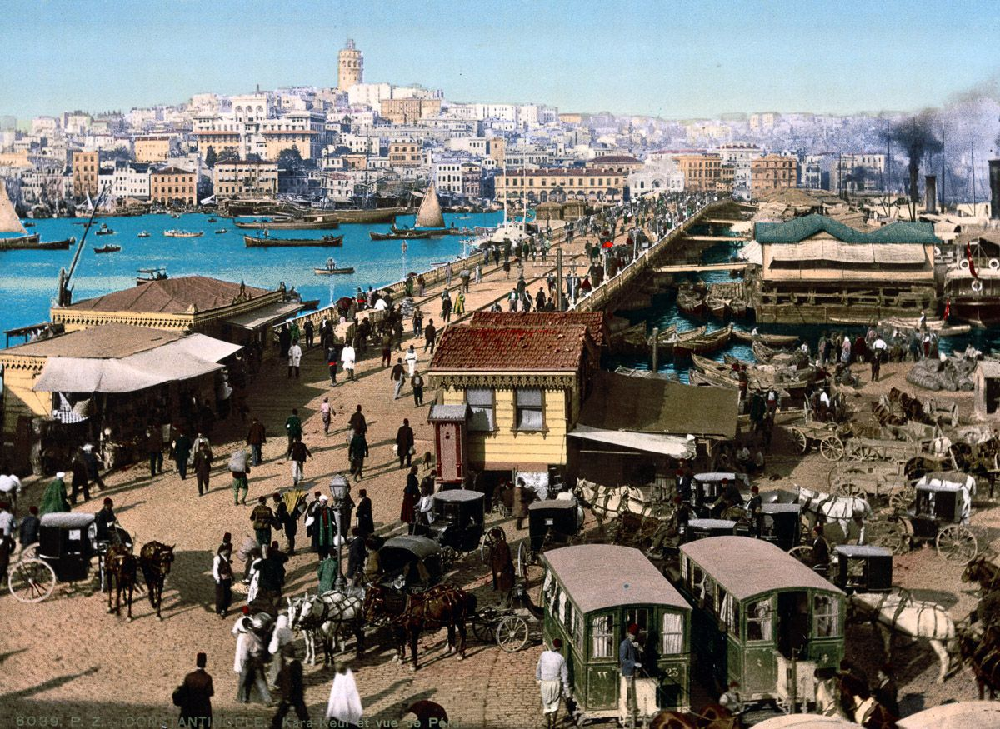

Gitmek istediğiniz döneme hızlıca atlamak için aşağıdaki menüyü kullanabilirsiniz:
İstanbul'un yerleşim tarihi, Yenikapı (Marmaray) kazılarıyla ortaya çıkan bulgulara göre yaklaşık 8.500 yıl öncesine, Neolitik döneme kadar uzanmaktadır. M.Ö. 667 yılında Megaralılar tarafından Byzantion adıyla kurulan şehir, stratejik konumuyla tarih boyunca hep odak noktası olmuştur.
M.S. 330 yılında Roma İmparatoru I. Konstantin tarafından imparatorluğun yeni başkenti ilan edilen şehir, "Nova Roma" (Yeni Roma) ve ardından "Konstantinopolis" olarak adlandırılmıştır. Yaklaşık 1100 yıl boyunca Doğu Roma İmparatorluğu'nun başkenti olmuş; Ayasofya gibi dünyaca ünlü mimari şaheserler bu dönemde inşa edilmiştir.
1453 yılında Fatih Sultan Mehmet tarafından gerçekleştirilen fetihten sonra İstanbul, Osmanlı İmparatorluğu'nun payitahtı olmuştur. Osmanlı döneminde şehir; camiler, külliyeler, hamamlar ve Topkapı Sarayı gibi eşsiz yapılarla yeniden şekillenmiş, farklı milletlerin ve inançların bir arada yaşadığı kozmopolit bir dünya şehri kimliği kazanmıştır.
Kurtuluş Savaşı'nın ardından 1923 yılında Türkiye Cumhuriyeti'nin ilanıyla birlikte başkent Ankara'ya taşınmış olsa da İstanbul, ülkenin en büyük sanayi, ticaret ve cultura merkezi olma özelliğini hiç yitirmemiştir. Günümüzde İstanbul, iki kıtayı birleştiren köprüleri ve modern silüetiyle dünyanın en önemli metropollerinden biridir.
İstanbul'un tüm detaylı kronolojik tarihine ulaşmak için aşağıdaki görsele tıklayabilirsiniz:
